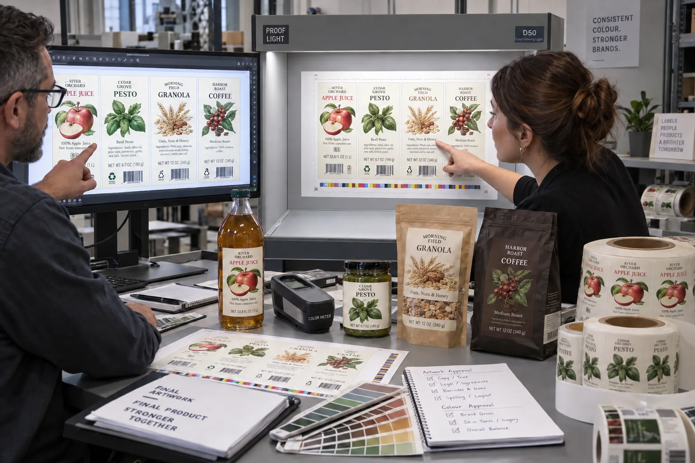

Short answer
Use the digital proof to approve content and layout. Use a color-managed contract proof to approve a defined color expectation. Use a production-material sample when substrate, white ink, metallic reflection, texture or finishing is the real question. One proof cannot prove everything.
The dangerous approval email is only two words: “Looks good.” Good in what way? If the legal copy is correct but the buyer means the monitor green, the pressroom and customer have approved different things.
Four proof levels solve four problems
| Proof type | Best for | Does not fully prove |
|---|---|---|
| Online PDF / soft proof | Copy, layout, dieline, versions | Physical color and material |
| Printed content proof | Readable size and physical layout | Contract color unless color-managed |
| Contract color proof | Measured process and spot-color expectation | Every production substrate and finish |
| Production-material sample | White ink, clear film, metallic, texture, foil | Full-run variation unless agreed |
A composite pesto-label approval
This is a composite planning example. A brand approves a PDF for a deep green pesto label from a bright laptop screen. The printed label is accurate to the supplied CMYK values but looks duller on uncoated textured paper. The brand says the proof was brighter; the converter says the numbers match.
Both statements can be true. The monitor uses emitted RGB light. The label uses reflected light, ink and a paper that absorbs and scatters color. I have been guilty of sending a soft proof with too little explanation because fast approval makes the schedule look healthy. It only postpones the difficult conversation.
The better workflow is to approve copy first, establish a physical color target, identify the actual substrate and decide whether a contract proof or production drawdown is justified.
Content proof and contract proof are not synonyms
Esko's proofing documentation distinguishes content proofing, used to check layout, text and barcodes, from contract proofing, which adds managed color and verification. That distinction is useful even when a converter uses different software: content approval answers “is everything present and correct?” Color approval answers “what measured appearance are we targeting?”
A contract proof needs known profiles, proof media, viewing light and tolerances. A desktop print from the sales office can be useful for scale but should not quietly become the color standard.
Why the final stock still matters
White paper, kraft, clear BOPP, metallic film and textured wine paper change color differently. Clear labels may need white underprint; metallic labels combine reflected substrate with ink; foil and embossing depend on angle and touch. Even a strong contract proof can only simulate some of these effects.
Pantone advises using a current physical standard when color moves from the digital realm to physical production. The production target should also account for the actual substrate and process, because the same nominal color does not appear identical everywhere.
Factory-side view
Free proof is useful when its promise stays honest
A digital proof should prevent wrong copy, wrong size and wrong version from reaching the press. That is already valuable.
Calling it color-accurate on every phone and laptop makes a free service expensive later. We would rather sell the next proof level only when the brand actually needs it.
Approval checklist
- Confirm SKU, revision, quantity and dieline dimensions.
- Read all copy at 100% and verify ingredients, warnings and net quantity.
- Scan production barcodes from a suitable physical sample.
- List process colors, spot colors and the physical reference used.
- Identify face stock, finish, white ink, foil and emboss layers.
- State the viewing condition and color tolerance for contract approval.
- Record exactly what the signed proof approves.
When the faster proof wins
A contract proof is not necessary for every reorder or low-risk internal label. When copy is the only change and the construction already has an approved production standard, a controlled digital proof may be enough. Spend the physical proof budget where the visual uncertainty is real.
Read Esko's official explanation of content and contract proofing and Pantone's guidance on physical color references. For file preparation before proofing, use our Label Artwork File Setup guide.
Frequently asked questions
What can a digital label proof approve?
It is best for content, layout, dieline position, spelling, barcode area, version and general appearance. An uncalibrated screen should not be treated as a physical color standard.
What is a contract color proof?
It is a color-managed physical proof produced to defined conditions and tolerances, intended to set a more objective expectation for printed color.
Will a contract proof show the exact label material?
Not always. Proof media may simulate production color but cannot fully reproduce the transparency, texture, metallic reflection, white ink or relief of the actual construction.
When should a buyer request a press sample?
Consider one for critical brand color on an unusual substrate, transparent or metallic constructions, complex white ink, foil, embossing or a high-value launch where material appearance drives the decision.
Related label guides
- Minimum Application vs Service Temperature for Labels
- Clear Label Sensors, Gaps and Eye Marks: Machine Guide
- Acrylic vs Rubber Adhesives for Product Labels
Review the complete label construction
Send package photos, material details, finished label size, quantity by artwork, storage conditions and application method. We can review fit, material and production details before preparing a quote and digital proof.